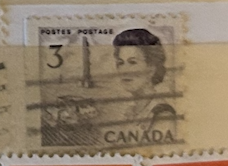
| SOURCE | TITLE| IMAGE MATCH | click to source page |
| eBay | Canada - 1970 Centenary Celebration | eBay |  |
| Stamp Bears | Canada Queen Elizabeth II Centennial | Stamp Bears | 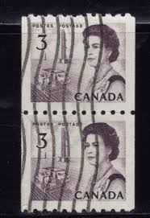 |
| Colnect | Canada : Stamps [Year: 1972] [1/21] : Colnect 📮 | 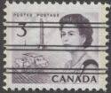 |
| Colnect | Stamp: QE II, oil derrick and combine harvester (Canada(Centennial Definitives 1967-73 - Low Values) Mi:CA 400DxR,Sn:CA 456xR 📮 | 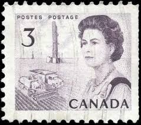 |
| Blogger.com | Postal History Corner | 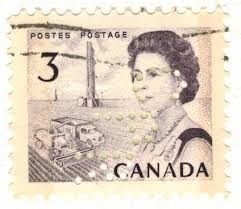 |
| Moreland Revenue Stamps | Canada Precancel Stamps | Moreland Revenue Stamps | 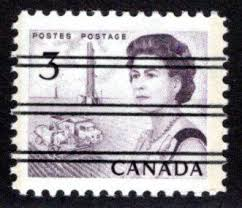 |
| eBay | Precancel Canadian Stamps for sale | eBay | 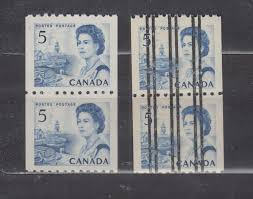 |
| Vista Stamps | Canada Stamps for sale | Vista Stamps | 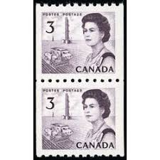 |
| eBay UK | Canada - 1967 - The 100th Anniversary Celebration - Queen Elizabeth, Northern Li | eBay UK | 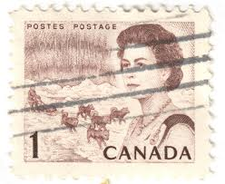 |
| eBay | CANADA, Queen Elizabeth II Blue - 6 Cent Stamp | eBay | 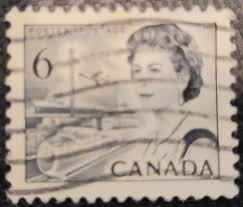 |
| Stamp Community Forum | Canada Post Gutter Product - Stamp Community Forum | 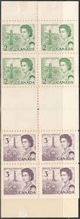 |
| eBay | CANADA SCOTT # 466xx PAIR, MINT, OG, NH, VERY FINE, GREAT PRICE! | eBay | 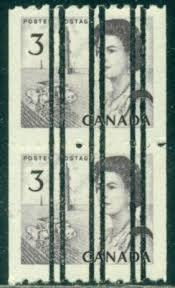 |
| eBay | Canada Scott 466xx Coil Pair MNH - 1967-72 Centennial Issue | eBay | 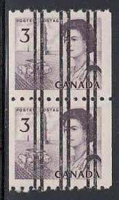 |
| Alamy | Vintage lorry 1960s uk hi-res stock photography and images - Alamy | 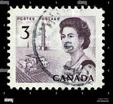 |
| Shutterstock | 6+ Thousand Canada Postmark Royalty-Free Images, Stock Photos & Pictures | Shutterstock | 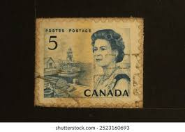 |
| Etsy | This item is unavailable - Etsy |  |
| Scott Traquair | BOOKLETS – Scott Traquair – Philatelist | 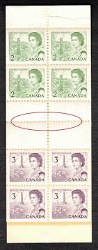 |
| Lee Stamp Sales | Canada 466xx Pair VF MNH - Lee Stamp Sales | 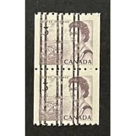 |
| HipStamp | Canada - 454 1967 Used | Canada, General Issue Stamp / HipStamp | 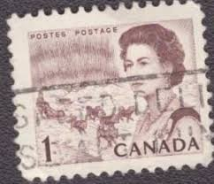 |
| eBay | Canada 3 Cent Stamp 1967 Scott 466 Queen Elizabeth II MNH Full Gum Unused | eBay | 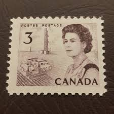 |
| eBay | Canada Scott #466 | Mint H | VF Very Fine | eBay | 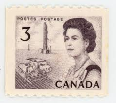 |
| eBay | Canada Scott 466 Coil MNH - 1967-72 Centennial Issue | eBay |  |
| eBay | Canada 1967 Centennial Coil 3c, 5c Precancels Pairs #466xx ,468xx MNH $7 | eBay | 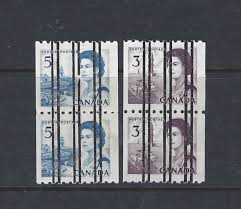 |
| eBay | Canada Scott 456pii MS Cnr Blk MNH - 1967-72 Centennial Issue | eBay | 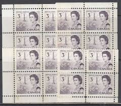 |
| lastdodo.com | Queen Elizabeth II - Saint Lawrence Seaway 4 (1967) - Canada - LastDodo | 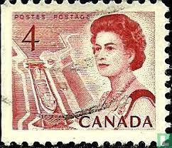 |
| Todocolección | 1967 - canada - isabel ii - aurora boreal y tri - Buy Antique stamps of Canada on todocoleccion | 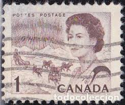 |
| Dreamstime.com | 127 Canada Stamp Set Stock Photos - Free & Royalty-Free Stock Photos from Dreamstime | 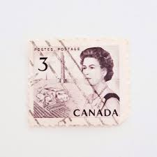 |
| ProBoards | Portugal - 1953 - Definitives - Medieval Knight Series | The Stamp Forum (TSF) | 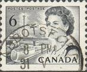 |
| The Itty Bitty Stamp Company | Canada Scott # 460e Mint Never Hinged Complete Booklet – The Itty Bitty Stamp Company | 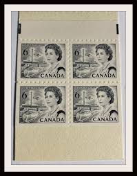 |
| Stampsandcanada | Stampsandcanada - Queen Elizabeth - 6 cents 1970 - Stamps of Canada - Price guide and value | 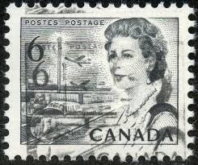 |
| Mystic Stamp Company | 457 - 1967 Canada - Mystic Stamp Company |  |
| Strange cut. Just wondering if it is an error or just badly cut from an envelope. : r/askStampCollectors | 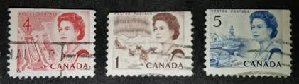 | |
| HipStamp | Canada 454 Queen Elizabeth II 1¢ 1967 | Canada, General Issue Stamp / HipStamp | 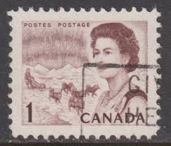 |
| eBay | Canada 466 MH | eBay | 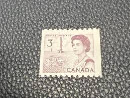 |
| eBay | Canada, 1 cent Stamp, # 454 Northern Lights, 1967 Used Centennial TK362* | eBay |  |
| Canadian Philatelic Society of Great Britain | april 2020 page proofs | 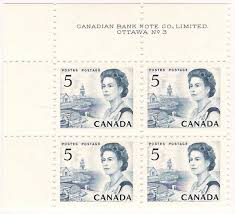 |
| HipStamp | Browse Listings / HipStamp | 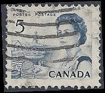 |
| eBay | CANADA LOT OF 15 PRECANCELS MINT MNH STAMPS, 5 SETS OF 3 QUEEN ELIZABETH II | eBay | 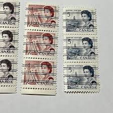 |
| eBay | Stamps 1971 Canada Queen Elizabeth ll Lot of 3 (on envelope paper) | eBay | 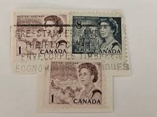 |
| eBay | pk03741:Stamps-Canada #455a Centennial Queen 4x2,4x3 cent Booklet Pane - MNH | eBay |  |
| Alamy | SEATTLE WASHINGTON - May 8, 2020: Engraved 1971 Queen Elizabeth definitive Canadian stamp featuring Library of Parliament. Scott # 544 Stock Photo - Alamy | 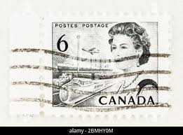 |
| Brixton Chrome | The 2c Pacific Coast Totem Pole Stamp of the 1967-73 Centennial Issue – Brixton Chrome | 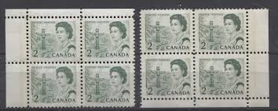 |
| eBay | Canada #BK66b MNH Booklet 1971 Centennial Type II Black Prestamped [543a] | eBay |  |
| ProBoards | Canada`s Centennial Definitive Set. | The Stamp Forum (TSF) | 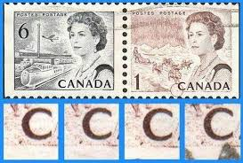 |
| Osta.ee | Kanada " ELIZABETH II / SADAM " 1967 (248034302) - Osta.ee | 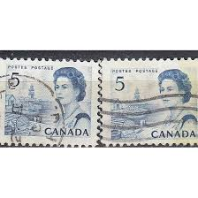 |
| Arpin Philately | Buy Canada #454pi - Queen Elizabeth II & Northern Lights (1968) 1¢ - WCB, 4mm bar, DF, DEX | Arpin Philately | 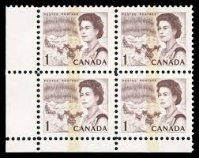 |
| Stamp Community Forum | Canada Centennials Printing Varieties. - Stamp Community Forum | 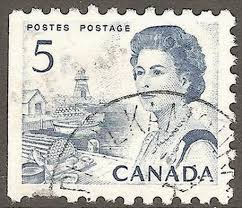 |
| eBay | Canada Scott 458pii Lt MS Cnr Blk MNH - 1967-72 Centennial Issue | eBay | 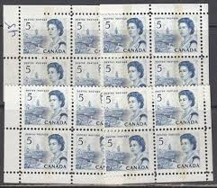 |
| eBay | Vintage Postcard. Issued 1973 Two Bears Storyland Valley Zoo Edmonton AB PC107 | eBay |  |
| Alamy | Medieval agriculture engraving hi-res stock photography and images - Alamy | 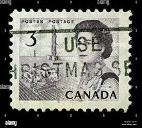 |
| eBay | Canada SC#466 MINT VF Coil strip (4), Dull Purple on Plain (DF) Paper | eBay | 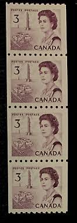 |
| eBay | Canada Scott 468i Coil Strip of 4 MNH - 1967-72 Centennial Issue | eBay | 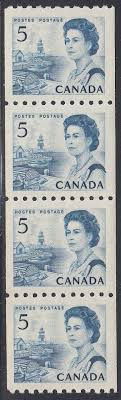 |
| Shutterstock | 8+ Thousand Eskimohund Royalty-Free Images, Stock Photos & Pictures | Shutterstock | 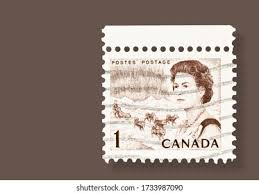 |
| eBay | T1651 Canada. Sc#466-468 MNH. Coils. CV $7.10. | eBay | 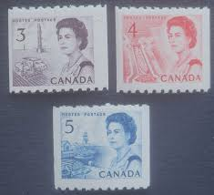 |
| Lee Stamp Sales | Lee Stamp Sales | Strips | 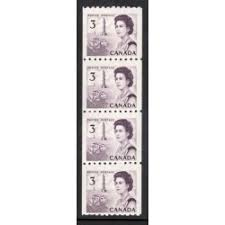 |
| eBay | CENTENNIAL #468i- 5¢ ** AWESOME IMAGE PRINT GUM SIDE ** SF (aka LF) STRIP 4 SUP | eBay | 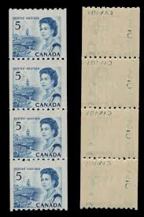 |
| Dreamstime.com | 02.11 editorial image. Image of page, french, corinna - 186046860 | 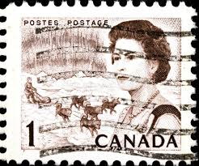 |
| eBay | Canada Scott 543 LL Pl #1 MNH - 1967-72 Centennial Issue | eBay | |
| Alamy | Team stamp hi-res stock photography and images - Alamy | |
| eBay | CANADA 1967 CENTENNIAL #460ii *** SCARCE HIBRITE FORMAT MSCB *** $360.00++ | eBay |